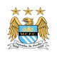
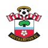
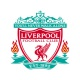
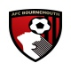

| 순위 | 클럽 | 경기 수 | 승점 | 홈페이지 |
|---|---|---|---|---|
| 1 | 레스터 시티 | 25 | 53 | |
| 2 | 토트넘 핫스퍼 | 25 | 48 |  |
| 3 | 아스날 | 25 | 48 | |
| 4 | 맨체스터 시티 | 25 | 47 |  |
| 5 | 맨체스터 유나이티드 | 25 | 41 | |
| 6 | 웨스트햄 유나이티드 | 25 | 39 |  |
| 7 | 사우샘프턴 | 25 | 37 |  |
| 8 | 에버튼 | 25 | 35 | |
| 9 | 리버풀 | 25 | 35 |  |
| 10 | 왓포드 | 25 | 33 | |
| 11 | 스토크 시티 | 25 | 33 | |
| 12 | 크리스탈 팰리스 | 25 | 32 | |
| 13 | 첼시 | 25 | 30 | |
| 14 | 웨스트 브롬위치 | 25 | 29 | |
| 15 | AFC 본머스 | 25 | 28 |  |
| 16 | 스완지 시티 | 25 | 27 | |
| 17 | 뉴캐슬 유나이티드 | 25 | 24 | |
| 18 | 노리치 시티 | 25 | 23 | |
| 19 | 선더랜드 | 25 | 20 | |
| 20 | 아스톤빌라 | 25 | 16 |  |